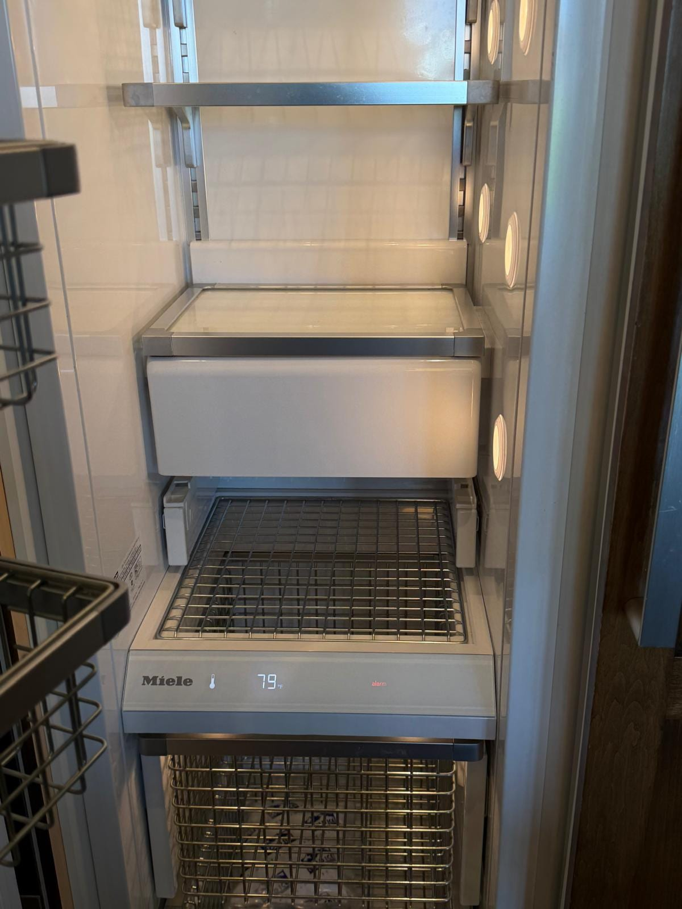

Miele Appliance Repair in Orange County, CA
Dishwasher not draining or laundry still wet? Get help with Miele dishwashers, washers, dryers and ovens. Same-day service available.
5.0 · 156 Google reviewsMon–Sat, 8am–7pm.

What to expect
- Flat $99 diagnostic feeApplied toward the repair if you approve the work.
- Written quote firstItemized, before any work starts.
- 90-day parts, 30-day laborWarranty on every repair.
- Same-day serviceCall or request online.
Family-owned since 2017 · Licensed, bonded & insured
Recent Miele Repairs
Two recent Miele jobs in Corona del Mar: a gas cooktop that kept clicking nonstop and a freezer that was not cooling. Both were repaired.
What Our Customers Say
From our 156 verified 5-star Google reviews
Work was fast and efficient. I highly recommend him.
I got my maintenance done on my washing machine and dryer.
He fixed the washing machine 👍
How It Works
From your first call to a working Miele appliance. Here's what to expect.
Request a RepairCall or Request a Repair
Reach us at (949) 629-5365 or submit the contact form. Tell us the model and the error code or symptom. Same-day scheduling available when a technician is open.On-Site Diagnosis
We confirm an arrival window when scheduling. The technician examines the appliance and explains the diagnosis before recommending parts or repair.Upfront Quote
You get a clear, itemized quote before we start. The $99 diagnostic fee applies toward the repair if you proceed. No surprise charges.Repair and Warranty
We complete the approved repair and test the appliance. If a part must be ordered, we explain the next step. Every repair carries a 90-day parts and 30-day labor warranty: if the same problem returns within 30 days, we come back at no charge.
Pricing & Discounts
- $99 diagnostic fee: applied toward your repair when you approve the work. If you decide not to proceed, the $99 covers the visit.
- Multi-unit visits: first unit $99, each additional unit on the same visit $49.
- 20% off labor for repeat customers and seniors 60+ (cannot combine with other offers).
Estimates vary by brand, part availability, and diagnosis. Final quote is provided before repair. See full pricing guide
Diagnostic visit$99
- Applied toward the repair when you approve the work
- Itemized written quote before any work starts
- You decide whether to proceed
Miele Appliances We Service
Start with the appliance and symptom. A model number helps us confirm the right service before scheduling your Orange County visit.
- Miele Dishwasher Repair
- Water left in the tub, a cycle that stops early or dishes that come out dirty? Tell us what happens and whether a message appears. For G5000, G7000 or an older Futura dishwasher, share the full model number so we can confirm service and plan the diagnosis.
- Miele Washer Repair
- If your W1 or other Miele washer will not drain or spin, leaks, or leaves clothes wet, note which stage of the cycle stops. Tell us if the washer is stacked beneath a dryer or installed in a tight laundry closet. Read our Miele washer not draining guide for model-aware troubleshooting.
- Miele Dryer Repair
- For a T1 heat-pump dryer or another Miele dryer, describe whether it runs without drying, stops early or displays a message. Let us know the model and whether the washer and dryer are stacked. We confirm the problem before recommending a repair.
- Miele Oven and Cooktop Repair
- If an oven will not heat, cooks unevenly or has an unresponsive display, tell us which functions still work. For a cooktop, identify the affected burner or cooking zone. Mention a built-in installation and any access restrictions when requesting service.
- Miele Coffee System Repair
- For a built-in or countertop coffee system, send the model number and describe what happens during brewing, rinsing or cleaning. Tell us whether a message appears and whether the appliance is installed in cabinetry. We confirm service for your specific unit when you contact us.
- Older and Built-In Miele Appliances
- Have an older model or a kitchen with matching cabinet panels? Share the model number, approximate age and installation details. Service options and parts availability need to be checked for the individual appliance. We discuss the repair quote with you before you decide to proceed.
What Is Your Miele Appliance Doing?
These details help us prepare for your call. An error message or symptom is a starting point for diagnosis, not a confirmed parts order.
- Dishwasher will not drain
- Tell us whether water remains after every cycle or only occasionally.
- Dishwasher stops with an error
- Write down the complete code and when it appears, rather than guessing which part failed.
- Washer will not spin
- Mention whether water remains in the drum and whether the door unlocks.
- Dryer leaves clothes damp
- Describe the selected program and whether the cycle finishes or stops early.
- Water leaking around the appliance
- Tell us where you first noticed the water and whether the appliance was running.
- Unusual noise during a cycle
- Describe when the noise starts: filling, washing, spinning, draining or drying.
- Oven or cooktop will not heat
- Identify which oven function, burner or cooking zone is affected.
- Display or controls not responding
- Share any displayed message and whether the appliance still runs.
Seeing a dishwasher code? Use our Miele dishwasher error-code guide to find the relevant model guidance. Include the code in your service request so the technician can check it alongside the symptoms.
Miele Repair Cost Estimates
Our diagnostic fee is $99, credited toward repair if you proceed. The ranges below are Orange County planning estimates, not a quote for your model. We explain the diagnosis, required parts and total price before you approve the repair.
| Repair Type | Typical Range |
|---|---|
| Service call / diagnostic: Orange County market average for premium brands | $95 – $150 |
| Drain pump replacement (dishwasher) | $250 – $450 |
| Water inlet valve | $200 – $400 |
| Door interlock micro-switch | $250 – $450 |
| Heating element / NTC sensor (dishwasher) | $300 – $550 |
| Washer drain pump or fill valve | $250 – $500 |
| M-Touch control panel (H7000 oven) | $600 – $1,100 |
| Drum bearings (W1 washer) | $600 – $1,000 |
Estimates vary by brand, part availability, and diagnosis. Final quote is provided before repair.
See our full appliance repair cost guide for broader Orange County pricing context.
Miele repair across Orange County
Universal Appliances Repair Group Inc. provides Miele appliance repair across Orange County, California, including dishwashers, washing machines, dryers, ovens, cooktops and coffee systems. We confirm your model, service address and appointment window before the visit.
We serve Irvine, Anaheim, Newport Beach, Costa Mesa, Santa Ana, Mission Viejo, and surrounding cities, with same-day service available. Call (949) 629-5365 or book online to schedule a Miele repair visit.
Miele Repair Questions
Still have a question? Call (949) 629-5365.
Yes. We service Miele dishwashers across Orange County, including Irvine, Anaheim, Newport Beach and Costa Mesa. Tell us the model number, symptoms and any displayed code. We confirm service for your appliance and check appointment availability when you contact us.
Same-day appointments are available when the assigned technician's schedule is open. Otherwise, we offer the next available appointment, usually within a day or two. We confirm the arrival window before the visit. An appointment does not guarantee same-day completion if a part needs to be ordered.
Our diagnostic fee is $99, credited toward repair if you proceed. The technician diagnoses the appliance and provides a quote before repair. Estimates vary by brand, part availability, and diagnosis. Final quote is provided before repair.
Include your city, full model number, appliance type, symptoms and any error message. Tell us whether the appliance is stacked, built into cabinetry or behind a custom panel. Share gate, parking or building-access instructions so we can plan the visit.
Yes. We service Miele washers and dryers, including W1 washers and T1 heat-pump dryers. Describe any drainage, spinning or drying problem and share the model number. Mention a stacked installation so we can discuss access before scheduling.
Yes. Contact us with the oven model and describe whether the display is blank, flickering or not responding to touch. We diagnose the appliance before recommending a control or display replacement. Parts availability and any follow-up visit depend on the specific model and diagnosis.
We help you compare the repair quote with your replacement options. The appliance's condition, repair history, parts availability and installation requirements all matter. Age alone does not settle the decision, and we do not recommend a repair before explaining what the diagnosis shows.
Our repairs carry a 90-day parts and 30-day labor warranty. Keep your service paperwork and contact us if the repaired problem returns. This is our repair warranty, separate from any Miele manufacturer warranty.
Other Luxury Brands We Service
Miele is a specialty, but it's not the only premium brand we work on across Orange County.
- DCSProfessional gas and dual-fuel ranges, cooktops, and California-built outdoor grills. Bake igniter and sealed-burner specialists.
- Sub-ZeroBuilt-in refrigerators, wine storage, and column units.
- WolfDual-fuel ranges, wall ovens, and cooktops. Sub-Zero's sister brand.
- VikingPro-style ranges, wall ovens, and built-in refrigerators.
- ThermadorPro Grand ranges, Sapphire dishwashers, and Freedom column fridges.
- DacorSamsung-backed American luxury brand. Heritage ranges, ovens, and refrigerators.
Need Miele Repair in Orange County?
Tell us your Miele model, symptom and Orange County city. Call to check same-day availability or request the next available appointment online.
Call (949) 629-5365
Request a Repair
Mon–Sat, 8am–7pm